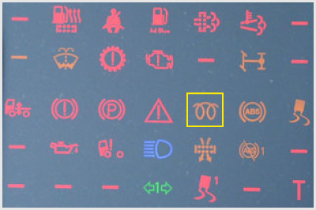

- 169. Milyen szerepet tölt be a biztosíték az áramkörben? #704411
- Zárlat bekövetkezésekor megszakítja az áramkört, hogy az áramerősség ne haladhassa meg a megengedett értéket.
- Akkor szakítja meg az áramkört, ha a feszültség meghaladja a megengedett értéket.
- A generátor túltöltése esetén megszakítja az áramkört, ezzel védi a fogyasztókat.
- Rövidzárlat esetén tartalék áramkörre kapcsol.
- 170. Mi a gépjármű generátorának a feladata? #704495
- Igény szerint a fogyasztók közvetlen energiaellátása, illetve az akkumulátor töltése.
- A lemerült akkumulátor töltése.
- Bizonyos villamos fogyasztók közvetlen áramellátása.
- A tüzelőanyag-levegő keverék előállítása a motor részére.
- 171. Miért tilos a kiolvadt biztosítékot dróttal, szöggel vagy egyéb fémtárggyal kiváltani? #704534
- Mert zárlat esetén a vezetékek izzásba jöhetnek, és ezzel tüzet okozhatnak.
- Mert ebben az esetben a túlfeszültség miatt hamarabb kiégnek az izzólámpák, tönkremennek a fogyasztók.
- Mert ebben az esetben lemerülhet az akkumulátor.
- Mert így bizonyos fogyasztók működése rendellenessé válthat.

- 172. A képen látható 1-es jelű biztosíték színe és számfelirata... #704545
- arra az áramerősségre utal, amelynél az kiolvad.
- egyértelműen meghatározza, hogy az melyik áramkör biztosítására szolgál.
- arra a hálózati feszültségre utal, amelynél az alkalmazható.
- azt a járműtípust határozza meg, amelyben az használható.
- 173. A képen látható 1-es jelű biztosítékot szükség esetén vezetékdarabbal, dróttal helyettesíteni... #704546
- tilos.
- lehet.
- lehet, de csak a lehető legrövidebb időre.
- világítóberendezéseket tápláló áramkörök kivételével lehet.
- 174. A képen látható 1-es jelű alkatrész... #704547
- egy olvadó biztosíték, amely a gépjármű egy bizonyos áramkörét védi a túlterheléstől.
- egy ellenőrző lámpát tartalmazó kapcsoló, amellyel a gépjármű egy bizonyos áramkörét lehet tesztelni.
- egy járműdiagnosztikai célokra használt ellenőrző lámpa.

- 175. A képen... #704549
- két, egymással sorba kapcsolt 12 V-os akkumulátor látható.
- két, egymással párhuzamosan kapcsolt 12 V-os akkumulátor látható.
- egy 24 V-os akkumulátor látható.
- egy 12 V-os akkumulátor látható.

- 176. A képen látható akkumulátor adattábláján a 2-es jelű feliratok és az 1-es jelű ’varázsszem’ arra utalnak, hogy... #704581
- az gondozásmentes.
- az rendszeres karbantartást, szükség esetén utántöltést igényel.
- az utántöltést csak akkor igényel, ha a ’varázsszem’ színe zöldről fehérre vált.
- az utántöltést csak akkor igényel, ha a ’varázsszem’ színe zöldről feketére vált.

- 177. A képen látható 1-es jelű alkatrész... #704602
- a generátor.
- az önindító.
- az ablaktörlő motor.
- a vízszivattyú.

- 178. Mire figyelmeztet a képen a bekeretezett visszajelző lámpa? #704711
- Az izzítógyertyák, vagy a lángindító működésére, vagy annak hibájára.
- A generátor hibájára.
- Valamelyik izzó kiégésére.
- 179. Milyen kialakítású a gépjárművek villamos hálózata? #704767
- Egyvezetékes rendszerű, amelyben az akkumulátor negatív pólusát kötik össze a jármű fém vázszerkezetével.
- Egyvezetékes rendszerű, amelyben az akkumulátor pozitív pólusát kötik össze a jármű fém vázszerkezetével.
- Kétvezetékes, ahol minden fogyasztóhoz egy pozitív és egy negatív vezeték van bekötve.
- 180. Mi a biztosíték feladata a jármű villamos hálózatában? #704768
- Rövidzárlat esetén a biztosíték megszakítja az áramkört.
- Rövidzárlat esetén lecsökkenti a fogyasztóra jutó áramerősség nagyságát.
- Egy villamos berendezés meghibásodása esetén hibajelet küld a vezérlőegységnek.
- Rövidzárlat esetén tartalék áramkörre kapcsol.
- 181. Hogyan állítják elő a nehéz haszongépjárművek elektromos rendszerében szokásos 24 V-os fedélzeti feszültséget? #704769
- Két 12 V feszültségű akkumulátor sorba kapcsolásával.
- Két 12 V feszültségű akkumulátor párhuzamos kapcsolásával.
- Egy 24 V feszültségű akkumulátorral.
- Négy 6 V feszültségű akkumulátor sorba kapcsolásával.
- 182. Milyen indítómotort alkalmaznak leggyakrabban a nehéz haszongépjárművek dízelmotorjának beindításához? #704770
- Leggyakrabban 24 V feszültségű csúszóarmatúrás indítómotort alkalmaznak.
- Leggyakrabban 12 V feszültségű csúszófogaskerekes indítómotort alkalmaznak.
- Leggyakrabban hidromotoros indítóberendezést alkalmaznak.
- 183. A képen látható akkumulátor adattábláján a 7-es jelű 12 V felirat... #714510
- az akkumulátor névleges feszültségét jelzi.
- a megengedhető töltőáram nagyságát jelzi.
- az akkumulátor celláinak számát jelenti.
- 184. Az akkumulátor kivezető pólusai... #714511
- közül a pozitív a nagyobb átmérőjű.
- azonos átmérőjűek.
- közül a negatív a nagyobb átmérőjű.
- közül a testelést megvalósító a nagyobb átmérőjű.
- 185. Mi a feladata a nehéz haszongépjárműveken alkalmazott akkumulátor-főkapcsolónak? #714512
- A jármű áramtalanítása akkor, ha azt hosszabb ideig nem használjuk.
- A bekapcsolásával hozzuk működésbe az izzógyertyát.
- Leválasztja a nagyobb fogyasztókat a jármű elektromos rendszeréről.
- Kíméli az akkumulátort, mert ha működtetik, akkor a fogyasztókat csak a gépjármű generátora látja el árammal.
- 186. Járó motor esetén megengedett-e az akkumulátor főkapcsolójának kikapcsolása? #714538
- Nem.
- Igen.
- 187. Amikor két darab - egymással folyamatosan sorba kapcsolt - 12 V feszültségű akkumulátor van a járművön, akkor... #714539
- valamennyi fogyasztó, illetve a generátor is 24 V feszültségű.
- valamennyi fogyasztó, illetve a generátor is 12 V feszültségű.
- valamennyi fogyasztó 12 V, a generátor pedig 24 V feszültségű.
- valamennyi fogyasztó, illetve a generátor is 6 V feszültségű.
- 188. A képen látható... #714540
- 1-es jelű alkatrész egy biztosíték, a 2-es jelű alkatrész egy relé.
- 1-es jelű alkatrész egy relé, a 2-es jelű alkatrész egy biztosíték.

- 189. A képen látható 1-es jelű alkatrész... #714595
- a generátor.
- az önindító.
- a vízszivattyú.
- az örvényáramú tartósfék.
- 190. Mi a generátor feladata? #714596
- Az akkumulátor töltése és a villamos fogyasztók árammal való ellátása.
- A motor álló helyzetében a villamos fogyasztók árammal való ellátása.
- Az Otto-motor gyújtóberendezésében a nagyfeszültség előállítása.
- A villamos fogyasztók árammal történő ellátása, ha az akkumulátor lemerült, vagy kiszerelték a gépjárműből.
- 191. A képen látható akkumulátorok által megvalósított hálózati feszültség... #721099
- 24 V.
- 12 V.
- 6 V.
- 220 V.
- 192. A képen látható akkumulátor adattábláján a 6-os jelű 175 Ah felirat... #721100
- az akkumulátor kapacitását jelzi.
- a megengedhető töltőáram nagyságát jelzi.
- az akkumulátor töltési idejét jelzi.
- 193. Mi történik akkor, ha a generátor vezetéke vagy az akkumulátor saruja meglazul járó motor esetén? #721108
- Kedvezőtlen esetben akár a generátor is meghibásodhat.
- Ez nem befolyásolja a jármű elektromos rendszereinek működését.
- 194. A képen látható 3-as jelű alkatrész... #721163
- egy ékszíjfeszítő görgő.
- a motor forgattyús tengelyére szerelt ékszíjtárcsa, amely a generátort és más segédberendezéseket hajtja.
- a generátor ékszíjtárcsája.
- 195. A képen látható 2-es jelű alkatrész... #721164
- a generátort meghajtó ékszíj.
- az önindító által meghajtott ékszíj.
- az olajszivattyút hajtó ékszíj.
- a vezérműtengelyt meghajtó ékszíj.
- 196. Amikor a dízelmotoros tehergépjármű elektromos hálózata 24 V feszültségű, akkor ezt a feszültséget... #721176
- két - egymással sorba kapcsolt - 12 V feszültségű akkumulátor biztosítja.
- egy darab indítóakkumulátor biztosítja, amelynek névleges feszültsége 24 V.
- két - egymással párhuzamosan kapcsolt - 12 V feszültségű akkumulátor biztosítja.
- egy 12 V feszültségű akkumulátor és egy transzformátor biztosítja.
- 197. A képen látható 3-as jelű vezeték... #724160
- a két 12 V-os akkumulátor sorba kapcsolására szolgál.
- az akkumulátorok közös testvezetéke.
- az önindító áramellátásáról gondoskodik.
- a generátorhoz vezet.